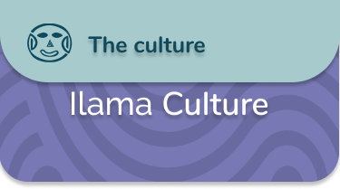

Se conoce muy poco sobre la organización social, política y económica de las sociedades que vivieron en la región Calima durante el período Ilama, en los catorce siglos anteriores al inicio de nuestra era. No es claro, por ejemplo, si utilizaron orfebrería. Sin embargo, sus representaciones artísticas sugieren la existencia de relaciones sociales de género, poder y jerarquía.
El período Ilama marca el comienzo del uso de la alfarería en la región Calima. Para estas sociedades la elaboración de piezas de cerámica fue una forma de expresar materialmente el mundo que les rodeaba, es decir, los principales aspectos que caracterizaron su vida diaria. Gran variedad de formas humanas y animales así como pasajes de la vida cotidiana como la maternidad o la decoración del cuerpo fueron representados en vasijas de cerámica de gran calidad estética.
Felinos, armadillos, búhos y palomas fueron animales de la región Calima que los alfareros plasmaron en representaciones realistas. Otros seres fabulosos, probablemente míticos, combinan rasgos de humano, felino, anfibio, murciélago y serpiente, tal vez con la intención de hacer propia la fuerza, audacia, fiereza y agilidad de estos animales.


.png)
.png)